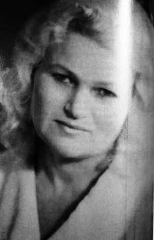

ЛЮДМИЛА ГНІДАШ
(Архів автора)


ГНІДАШ (ОБУШЕНКО) Людмила Іванівна відома у вузькому колі читачів циклом поезій, виданому в 2006 році в Луганську (видавництво «Знання») у збірці «Дві долі» під рубрикою «Ідуть роки».
Народилась Людмила Гнідаш 1956 року в селищі Білокуракине Луганської області. Там закінчила 8 класів і продовжила навчання у Ржищівському педучилищі, потім – у Київському інституті ім. Драгоманова.
Працювала вчителем початкових класів та вчителем трудового навчання в Ірпінській школі №9 (Київська обл.). За вислугою років вийшла на пенсію і тепер працює екскурсоводом у Водно-інформаційному центрі м. Києва.
Поетичною творчістю займається зі студентських років, друкувалась в газетах, довго спілкувалась із прекрасним поетом Іваном Савичем, який бережно турбувався про зростання її поетичного хисту.
Збірка її поезій вийшла в альманаху «Воронцева слобода» №3 (2018 року), де поміщені вірші поетів Білокуракинщини (Луганська обл.).
Окремою збіркою вийшла книга під назвою «Мене весна зачарувала» (2019 рік).
Це вірші про кохання, сильні і незабутні почуття, які залишаються у серці назавжди.
Вся книга проникнута любов’ю до рідної землі, її природи, батьківського дому.
Автор надіється, що його лірична сповідь виклика у читача найкращі спогади про юність, молодість і чисті почуття, – в усякому разі, не залишить їх байдужими.
Ветеран педагогічної праці,
Відмінник народної освіти України,
член Білокуракинського районного літературного об’єднання «Колосок»
Н.О.Гнідаш